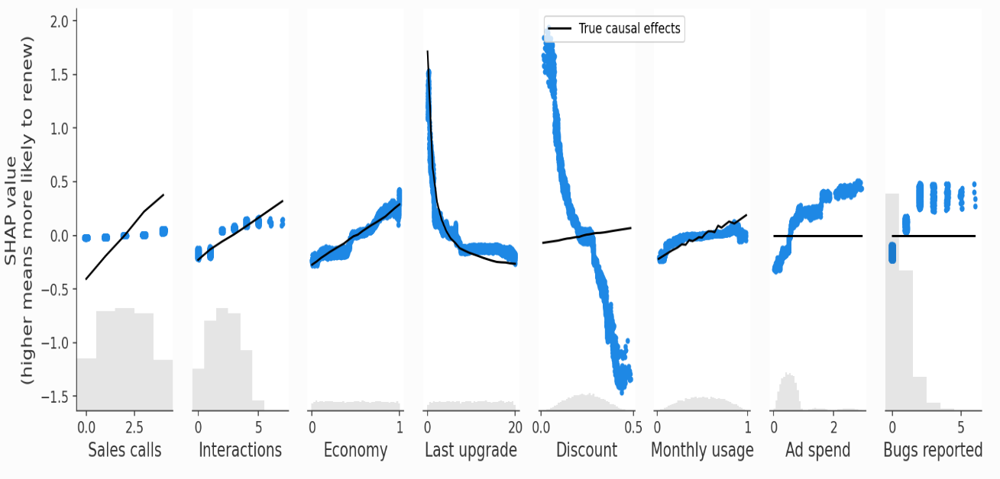
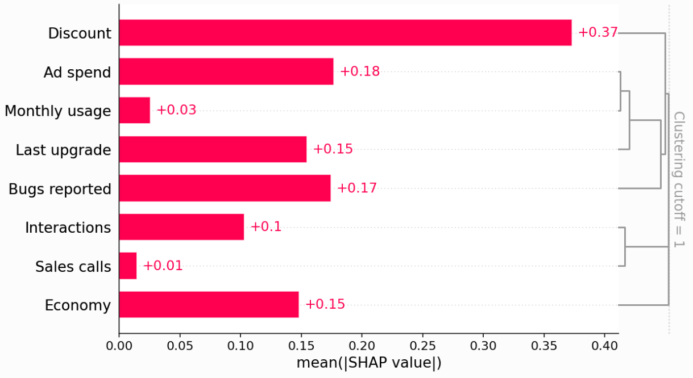

Methods #1: Introduction#
Executive summary
Methods for causal effect estimation.
Conventional methods:
(Principal) Stratification
Matching
Inverse probability of treatment weighting (IPTW)
Multivariable regression
G-methods:
G-computation (/ parametric G-formula / G-standardisation / standardisation / outcome regression)
Marginal structure models
G-estimation
Methods to address unobserved confounding:
Instrumental variables
Regression discontinuity (RD)
Interrupted time series (ITS)
Difference in differences (DiD)
Other methods:
Marginal, asymmetric conditional, and causal SHAP values
Synthetic control
Matrix completion
Causal discover
Double machine learning
Causal forests
Strucrtural estimation
where does difference in differences fit in? https://dimewiki.worldbank.org/Difference-in-Difference
continue to use this textbook throughout https://www.hsph.harvard.edu/miguel-hernan/wp-content/uploads/sites/1268/2024/01/hernanrobins_WhatIf_2jan24.pdf
read this - may help with where difference in differences fits in - andjust generally looks good https://www2.stat.duke.edu/~fl35/CausalInferenceClass.html
Will need to integrate with the page on methods to account for treatment paradox
haven’t covered bayesian causal inference… https://royalsocietypublishing.org/doi/10.1098/rsta.2022.0153 and http://www2.stat.duke.edu/~fl35/BayesianCausalInference.html
erik shared these to have a look at:
I would also very much recommend The Effect: An Introduction to Research Design and Causality by Nick Huntington-Klein
I’ve heard good things about Causal Inference: The Mixtape by Scott Cunningham
Designing a study to estimate a causal effect from observational data#
The gold standard method for inferring causality is randomisation - e.g. randomising patients to receive a treatment or not. This is because it removes confounding - it removes the common cause of the treatment and outcome, since the only cause of treatment was randomisation.[HarvardX PH559x]
When we are using observational data, there are a variety of possible methods for causal effect estimation. They all rely on assumptions (although those cannot always be tested).
When designing a study, you need to:
Clearly specify the research question in terms of a causal estimand
This allows you to choose an appropriate method for this estimand, and to carefully interrogate the influence of biases using sensitivity and quantitative bias analysis. [Igelström et al. 2022]
Groups of methods for causal effect estimation#
Methods for causal effect estimation can be broadly grouped into:
Conventional methods
G-methods (which address treatment-confounder feedback)
Methods to address unobserved confounding [no source]
Conditional v.s. marginal effect measures#
Different methods will produce effect measures that are conditional (specific to certain population) or marginal (relevant to whole population).
Non-collapsibility refers to a phenomenon where a conditional effect measure differs from the marginal effect measure even in the absence of confounding. This is true for certain non-linear effect measures like the odds ratio
This may make conditional measures more difficult to compare between studies (since different studies typically adjust for different sets of covariates)
On the other hand, marginal effeccts may be less transportable between populations [Vansteelandt and Keiding 2011]
Current practice#
2022 mapping review of confounding adjustment methods used for longitudinal observational data#
Wijn et al. 2022 conducted a mapping literature review to determine which confounding adjustment methods were used in longitudinal observational data to estimate a treatment effect. They identified the following studies:
 Abbreviations: CA, covariate adjustment; IPW, inverse probability weighting; PS, propensity score; PSM, propensity score matching; TdPSM, time-dependent propensity score matching.
Abbreviations: CA, covariate adjustment; IPW, inverse probability weighting; PS, propensity score; PSM, propensity score matching; TdPSM, time-dependent propensity score matching.
You can see that in the context of longitudinal observational data
66% time-varying treatment, 26% treatment at baseline, 8% time of treatment not clearly defined
For treatment at baseline, majority of papers use propensity score matching with baseline covariates (82%)
For time-varying treatment:
30% inverse probability weighting
25% propensity score matching with baseline coavariates
14% propensity score matching with baseline covariates combined with time-dependent Cox regression
10% covariate adjustment using propensity score
8% time-dependent propensity score
4% parametric G-formula
2% propensity score stratification
3% G-estimation
Hence, for time-varying treatment, often inappropriate methods are use - 25% used probability score matching with baseline covariates ‘which can potentially result in a biased treatment effect’ - and only 45% of the papers used g-methods. [Wijn et al. 2022]
Other reviews include -
2019 systematic review of studies adjusting for time-dependent confounding, finds inverse probability of treatment weighting estimated marginal structure models to be the most common technique [Clare et al. 2019]
What you shouldn’t do#
All possible confounders#
‘Many analysts take the strategy of putting in all possible confounders. This can be bad news, because adjusting for colliders and mediators can introduce bias, as we’ll discuss shortly. Instead, we’ll look at minimally sufficient adjustment sets: sets of covariates that, when adjusted for, block all back-door paths, but include no more or no less than necessary. That means there can be many minimally sufficient sets, and if you remove even one variable from a given set, a back-door path will open.’[source]
Schisterman et al. 2009 ‘define unnecessary adjustment as control for a variable that does not affect bias of the causal relation between exposure and outcome but may affect its precision.’ - so:
Adjusting for a variable completely outside the system of interest (C1)
Adjusting for a variable that causes the exposure only (C2)
Adjusting for a variable whose only causal association with variables of interest is as a descendent of the exposure and not in the causal pathway (C3)
Adjusting for a variable whose only causal association with variables of interest is as a cause of the outcome (C4)
Adjusting for these varaibles should not impact the total causal effect on the outcome, but may be gain or loss in precision of relationship between exposure of interest, the unnecessary adjustment variables, and the outcome of interest.[Schisterman et al. 2009]
Data-driven selection of confounders#
‘Though generally not advisable, data-driven confounder selection may be employed in small datasets, under the condition that the data has been pre-processed to entail that covariates fed into the statistical selection method are only potential confounders and free of mediators’.[Ramspek et al. 2021 (supplementary)]
Adjust for time-varying confounders using conventional methods#
‘Adjusting for time-dependent confounders using conventional methods, such as time-dependent Cox regression, often fails in these circumstances, as adjusting for time-dependent confounders affected by past exposure (i.e. in the role of mediator) may inappropriately block the effect of the past exposure on the outcome (i.e. overadjustment bias). For example, we wish to determine the effect of blood pressure measured over time (as our time-varying exposure) on the risk of end-stage kidney disease (ESKD) (outcome of interest), adjusted for eGFR measured over time (time-dependent confounder). As eGFR acts as both a mediator in the pathway between previous blood pressure measurement and ESKD risk, as well as a true time-dependent confounder in the association between blood pressure and ESKD, simply adding eGFR to the model will both correct for the confounding effect of eGFR as well as bias the effect of blood pressure on ESKD risk (i.e. inappropriately block the effect of previous blood pressure measurements on ESKD risk).’ [Chesnaye et al. 2022]
ROUGH NOTES…#
Additional: counterfactual prediction modelling#
In the case of counterfactual prediction modelling (which answers ‘what if’ questions on prognosis related to interventions) prediction and etiology intentionally collide.[Ramspek et al. 2021]
look into this
When can prediction models answer causal questions?#
As this example is from a simulation study where know true causal effects, we can plot the SHAP values from the prediction models v.s. the known true causal effects.

We can also add clustering to see the redundancy structure of the data as a dendrogram - ‘when features merge together at the bottom (left) of the dendrogram it means that that the information those features contain about the outcome (renewal) is very redundant and the model could have used either feature. When features merge together at the top (right) of the dendrogram it means the information they contain about the outcome is independent from each other.’

When can predictive models answer causal questions? When the feature is independent of (a) other features in the model, and (b) unobserved confounders. Hence, it is not subject to bias from either unmeasured confounders or feature redundancy. Example: Economy
Independent from other features in dendogram (no observed confounding)
No unobserved confounding in causal digram
When can they not be used? (1) When you have observed confounding. Example: Ad Spend (no direct causal effect on retention, but correlated with Last upgrade and Monthly usage which do drive retention). ‘Our predictive model identifies Ad Spend as the one of the best single predictors of retention because it captures so many of the true causal drivers through correlations. XGBoost imposes regularization, which is a fancy way of saying that it tries to choose the simplest possible model that still predicts well. If it could predict equally well using one feature rather than three, it will tend to do that to avoid overfitting.’
However, there are methods to deal with observed confounding, such as double/debiased machine learning model. This involves:
Train model to predict feature (Ad spend) using set of confounders (features not caused by Ad spend)
Train model to predict outcome (Did Renew) using that set of confounders
Train model to predict residual variation of outcome (the variation left after subtracting our prediction) using the residual variation of the causal feature of interest
‘The intuition is that if Ad Spend causes renewal, then the part of Ad Spend that can’t be predicted by other confounding features should be correlated with the part of renewal that can’t be predicted by other confounding features.’ There are packages like econML’s LinearDML for this.
When can they not be used? (2) When you have non-confounding redundancy. ‘This occurs when the feature we want causal effects for causally drives, or is driven by, another feature included in the model, but that other feature is not a confounder of our feature of interest.’
Example: Sales Calls directly impact retention, but also have an indirect effect on retention through Interactions. We can see this in the SHAP scatter plots above, which show how XGBoost underestimates the true causal effect of Sales Calls because most of that effect got put onto the Interactions feature.
‘Non-confounding redundancy can be fixed in principle by removing the redundant variables from the model (see below). For example, if we removed Interactions from the model then we will capture the full effect of making a sales call on renewal probability. This removal is also important for double ML, since double ML will fail to capture indirect causal effects if you control for downstream features caused by the feature of interest. In this case double ML will only measure the “direct” effect that does not pass through the other feature. Double ML is however robust to controlling for upstream non-confounding redundancy (where the redundant feature causes the feature of interest), though this will reduce your statistical power to detect true effects. Unfortunately, we often don’t know the true causal graph so it can be hard to know when another feature is redundant with our feature of interest because of observed confounding vs. non-confounding redundancy. If it is because of confounding then we should control for that feature using a method like double ML, whereas if it is a downstream consequence then we should drop the feature from our model if we want full causal effects rather than only direct effects. Controlling for a feature we shouldn’t tends to hide or split up causal effects, while failing to control for a feature we should have controlled for tends to infer causal effects that do not exist. This generally makes controlling for a feature the safer option when you are uncertain.’
When can they not be used? (3) When you have unobserved confounding. ‘The Discount and Bugs Reported features both suffer from unobserved confounding because not all important variables (e.g., Product Need and Bugs Faced) are measured in the data. Even though both features are relatively independent of all the other features in the model, there are important drivers that are unmeasured. In this case, both predictive models and causal models that require confounders to be observed, like double ML, will fail. This is why double ML estimates a large negative causal effect for the Discount feature even when controlling for all other observed features’
‘Specialized causal tools based on the principals of instrumental variables, differences-in-differences, or regression discontinuities can sometimes exploit partial randomization even in cases where a full experiment is impossible. For example, instrumental variable techniques can be used to identify causal effects in cases where we cannot randomly assign a treatment, but we can randomly nudge some customers towards treatment, like sending an email encouraging them to explore a new product feature. Difference-in-difference approaches can be helpful when the introduction of new treatments is staggered across groups. Finally, regression discontinuity approaches are a good option when patterns of treatment exhibit sharp cut-offs (for example qualification for treatment based on a specific, measurable trait like revenue over $5,000 per month).’